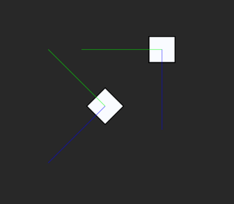

2D Rotation
This lesson covers the basics concepts of rotating an object.
Learning Objectives
- Understand the difference between local and world rotation
- How to rotate an object using Transform
- How to rotate an object using Orientation
| Vocabulary | |||
|---|---|---|---|
| Angle | Axis | Degrees | Radians |
| Rotation | Orientation |
Quaternion |
Euler Angles |
| Local Rotation | World Rotation | Parent | Child |
Level Setup
- CreateNewProject
- Command :
CreateSpriteor
{kind=link}
- Select the Sprite you created
- In the Properties Window
- Set name to:
Wheel - Under
Transform- Hover over the name of the Rotation Property
- Set name to:
As you can see, Rotation is saved as a Quaternion. As a high-level developer, you do not need to know how Quaternions work, but you will need to know how to use them. In the Properties Window, Quaternions are represented by three angles that are the rotation of the object around the corresponding axes; these are called Euler (pronounced “oil-er”) angles. In this lesson, we will be working with a 2D game, so we only need to worry about the Z axis rotation.
{kind=link}
The sprite is now rotated by 45 degrees. It is very simple to set the starting rotation of an object through the Properties Window.
Local and World Rotation
Before we get into rotating objects while the game is running, we need to understand the difference between the LocalRotation and WorldRotation values of an object.
- Add a new ZilchScript resource named:
RotationPrinter - Update the RotationPrinter script to the following code:
class RotationPrinter : ZilchComponent
{
function Initialize(init : CogInitializer)
{
var angle = Math.ToDegrees(this.Owner.Transform.EulerAngles.Z);
Console.WriteLine("Object Name: `this.Owner.Name`, Z-Angle: `angle`");
}
}
- Select the Wheel Object
- In the Properties Window
- Save the project and run the game
Now when the game starts the Wheel object’s name and Z rotation are printed to the Console window.
Console Output:
---------------- Begin Game --------------- Object Name: Wheel, Z-Angle: 45 Level 'Level' was loaded. Loaded level 0.02s
In the Properties Window
- Under
Transform- Set Rotation to:
[0, 0, 0]
- Set Rotation to:
- Under
Command :
CreateSpriteorIn the Properties Window
- Set name to:
WheelChild - Under
Transform- Set Translation to:
[3, 0, 0] - Set Rotation to:
[0, 0, 45]
- Set Translation to:
- Add the RotationPrinter component
- Set name to:
In the Objects Window
Make the
WheelChilda child of theWheelobject.
{kind=link}
We can see the child is rotated, now let’s rotate the parent again.
In the Properties Window
Under
TransformSet Rotation to:
[0, 0, 45]
{kind=link}
Because the WheelChild object is a child of the Wheel object, its Transform properties are scaled and rotated by the Wheel object’s Transform properties. This is a good illustration of LocalRotation vs WorldRotation as the WheelChild object very clearly has its rotation set to 45 degrees along with the parent. However since the parent’s Rotation is applied to the child it appears to be rotated by 90 degrees. Let’s make this a little easier to see.
- Add a new ZilchScript resource named:
AxisDebug - Update the AxisDebug script to the following code:
class AxisDebug : ZilchComponent
{
[Dependency]
var Transform : Transform;
[Dependency]
var Orientation : Orientation;
[Property]
var ArrowLength : Real = 3.0;
function Initialize(init : CogInitializer)
{
Zero.Connect(this.Space, Events.LogicUpdate, this.OnLogicUpdate);
}
function OnLogicUpdate(event : UpdateEvent)
{
var myPos = this.Transform.WorldTranslation;
var forward = this.Orientation.WorldForward;
var up = this.Orientation.WorldUp;
var right = this.Orientation.WorldRight;
this.DrawArrow(myPos, forward, Real4(1,0,0,1));
this.DrawArrow(myPos, up, Real4(0,1,0,1));
this.DrawArrow(myPos, right, Real4(0,0,1,1));
}
function DrawArrow(start : Real3, direction : Real3, color : Real4)
{
var arrow = DebugLine();
arrow.Float4Color(color).Start(start).End(start + (direction * this.ArrowLength)).Draw();
}
}
- Select both the Wheel and the WheelChild objects
- In the Properties Window
You may notice that the AxisDebug component requires an Orientation component. The Orientation component will be explained later in this lesson.

Now we can see the local X axis of the WheelChild object drawn in blue, and the local Y axis drawn in green. Since these are the local axes of each object, they are rotated by the rotations of the object and its parent (if there is one). This shows that the WheelChild object is rotated a full 90 degrees. However, if we look at the Console Window, we printed a 45 degree angle for both objects.
Console Output:
---------------- Begin Game --------------- Object Name: Wheel, Z-Angle: 45 Object Name: WheelChild, Z-Angle: 45 Level 'Level' was loaded. Loaded level 0.00s
This is because the EulerAngles property is based off the local rotation of the object, which has not been modified, and is still what we set it to before the game started, whereas the world rotation is the local rotation rotated by the world rotation of its parent.
Rotating With Transform
Rotating objects at runtime is done very commonly in games. Let’s cover a few ways to do this.
- Add a new ZilchScript resource named:
RotationTest - Update the RotationTest script to the following code:
class RotationTest : ZilchComponent
{
[Property]
var RotationSpeed : Real = 30.0;
function Initialize(init : CogInitializer)
{
Zero.Connect(this.Space, Events.LogicUpdate, this.OnLogicUpdate);
}
function OnLogicUpdate(event : UpdateEvent)
{
var rotationSpeedRadians = Math.ToRadians(this.RotationSpeed);
this.Owner.Transform.RotateAnglesLocal(Real3(0,0,rotationSpeedRadians * event.Dt));
}
}
- Select the WheelChild object
- In the Properties Window
- Save the project and run the game

By calling the above update function, we can rotate the object each frame.
Update the RotationTest script
OnLogicUpdatefunction with the following code:function OnLogicUpdate(event : UpdateEvent) { var rotationSpeedRadians = Math.ToRadians(this.RotationSpeed); this.Owner.Transform.RotateAnglesWorld(Real3(0,0,rotationSpeedRadians * event.Dt)); }
Notice that the result appears the same as when we were using the RotateAnglesLocal function. This will often be the case when working in 2D, as we do not have any rotations around other axes to affect our Z axis rotation.
Update the RotationTest script
OnLogicUpdatefunction with the following code:function OnLogicUpdate(event : UpdateEvent) { var rotationSpeedRadians = Math.ToRadians(this.RotationSpeed); var rotation = Math.ToQuaternion(Real3(0,0,rotationSpeedRadians * event.Dt)); this.Owner.Transform.RotateAround(this.Owner.Parent.Transform.Translation, rotation); }

With the RotateAround function, we are simply telling the WheelChild object to rotate around the point defined by the translation of the Wheel object. This could also have been achieved by rotating the Wheel object with RotateAnglesLocal or RotateAnglesWorld.
There are two more rotation functions of the Transform component, RotateLocal and RotateWorld. These functions have the same functionality as RotateAnglesLocal and RotateAnglesWorld except they take Quaternions. You can turn Euler angles into a Quaternion in the same way we did in the last code snippet using Math.ToQuaternion.
- Stop the Game
Transform rotation functions are great for rotating an object a specific amount or continuously over a series of frames. However, what if you want to have an object look at a particular direction? You would have to determine the direction, then the rotation, to make the object face that direction, which could involve quite a bit of vector math. Let’s look at an easier way to do this.
Rotating With Orientation
In the last section we needed to attach the Orientation component to the Wheel object in order to draw the axis of the object. Orientation is a very useful component that allows you to redefine the base axis of an object. Using the Orientation component, we can stop thinking about transforming the object using X, Y, and Z; instead, we use the Forward, Up, and Right axes.
- Select the Wheel and WheelChild object
- Under
Orientation- Set DefaultOrientation to:
ForwardXUpZ
- Set DefaultOrientation to:
- Under
By setting the local X axis to be the Forward axis we can now tell the Wheel object to face a certain direction.
Update the RotationTest script
OnLogicUpdatefunction with the following code:function OnLogicUpdate(event : UpdateEvent) { var screenPos = Zero.Mouse.ScreenPosition; var mousePos = this.LevelSettings.CameraViewport.ScreenToWorldZPlane(screenPos, 0.0); this.Owner.Orientation.LookAtPoint(mousePos); }

Now, if we move the mouse around the screen, we can see the WheelChild object rotates to have its Forward axis face the mouse.
Update the RotationTest script
OnLogicUpdatefunction with the following code:function OnLogicUpdate(event : UpdateEvent) { var screenPos = Zero.Mouse.ScreenPosition; var mousePos = this.LevelSettings.CameraViewport.ScreenToWorldZPlane(screenPos, 0.0); this.Owner.Orientation.LookAtPointWithUp(mousePos, Real3.ZAxis); }

Now, if we move the mouse around the screen, we can see the WheelChild object still rotates to have its Forward axis face the mouse. This time, however, the perpendicular axis we see is the local Y axis, where as before it was the Z axis. This is because without giving Orientation an axis to rotate around, it uses the global Up, which is the Y axis.
-
- Under
Orientation- Set GlobalUp to:
[0, 0, 1]
- Set GlobalUp to:
- Under
Update the RotationTest script
OnLogicUpdatefunction with the following code:function OnLogicUpdate(event : UpdateEvent) { var screenPos = Zero.Mouse.ScreenPosition; var mousePos = this.LevelSettings.CameraViewport.ScreenToWorldZPlane(screenPos, 0.0); this.Owner.Orientation.LookAtPoint(mousePos); }
{kind=link}
Even though we have changed the code back to use LookAtPoint , it is rotating around the Z axis correctly since we fixed the GlobalUp. Let’s look at another function on Orientation.
Update the RotationTest script
OnLogicUpdatefunction with the following code:function OnLogicUpdate(event : UpdateEvent) { var screenPos = Zero.Mouse.ScreenPosition; var mousePos = this.LevelSettings.CameraViewport.ScreenToWorldZPlane(screenPos, 0.0); var mouseDirection = mousePos - this.Owner.Transform.WorldTranslation; mouseDirection = Math.Normalize(mouseDirection); this.Owner.Orientation.LookAtDirection(mouseDirection); }
While we are now using the LookAtDirection function, the functionality looks the same, and it basically is. By subtracting mousePos from the WheelChild object’s Translation , we can get a vector from the object to the mouse, then by normalizing the vector we can just get a direction to have the object face.
{kind=link}
Now we know the basics of making objects rotate using the Transform component and the Orientation component, and we understand the difference between Local and World Rotation.